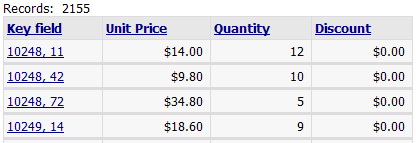

Composing a SQL Field Expression
The target database determines what SQL syntax for an expression is acceptable. The Application Server does not care what you write, because it simply passes the SQL as is though to the target database.
This following is an example expression that Microsoft Access accepts. This expression concatenates two fields to create a unique value named mykeyfield. This expression was required because the source table did not have that single key field that could be used to link to a detail view form.
|
(order_details.orderid & order_details.productId) as mykeyfield |
In the SQL SELECT statement this expression appears as
|
... (order_details.orderid & order_details.productId) ... |
The expression above appeared as Expr1005 in the field list. After making the following changes:
Grid > Field > Column Properties > Orderid > Hide column to true (checked)
Grid > Field > Column Properties > Productid > Hide column to true (checked)
Grid > Field > Column Properties > Expr1005 > Column heading to "Key field"
Grid > Field > Link Properties > Expr1005 > Display what in field to "Value from other field(s)"
Grid > Field > Link Properties > Expr1005 > Field(s) to display to "{Orderid}, {Productid}"
the grid appeared as shown below:

See Also
SQL Builder, Creating Grid Components
Limitations
Web publishing applications only.